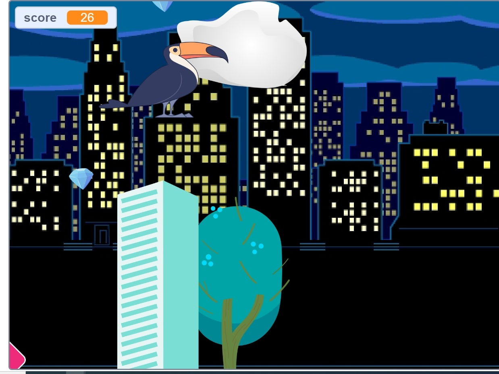
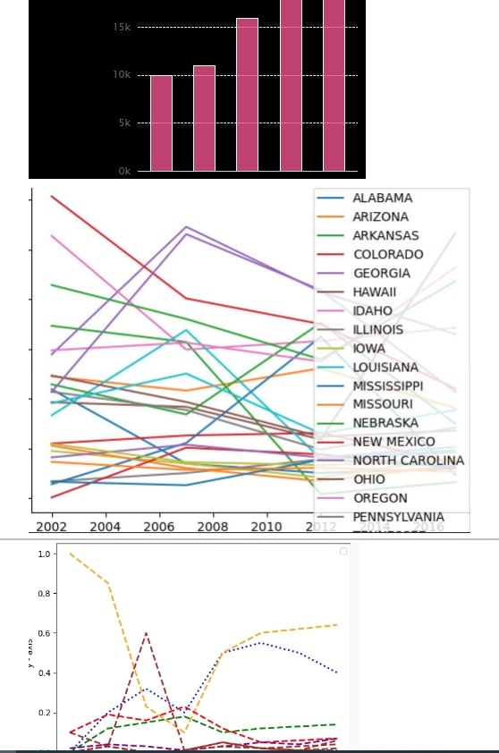
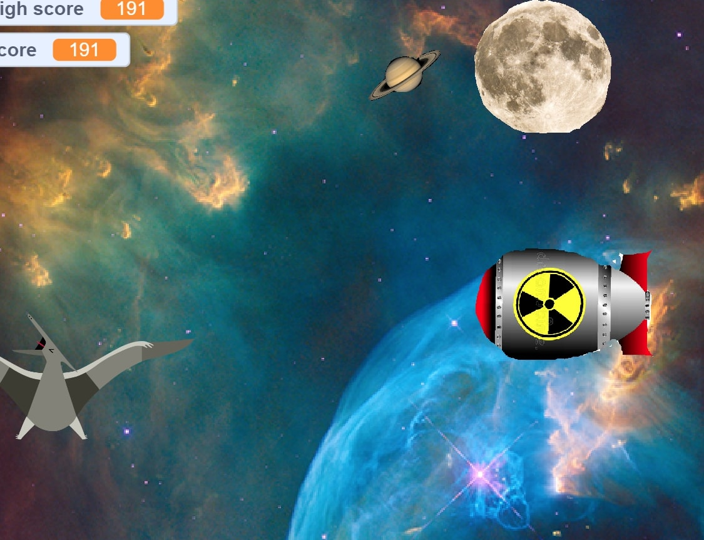
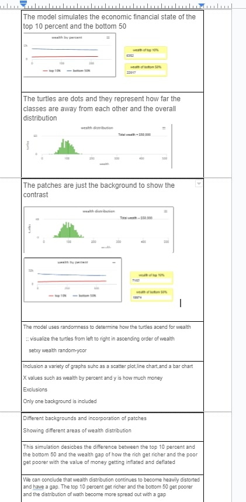
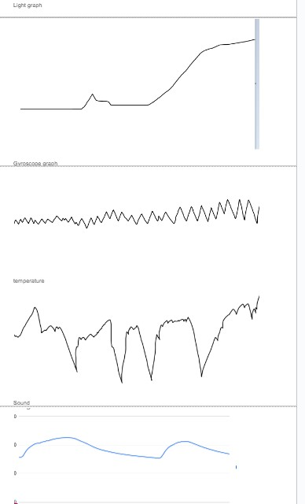
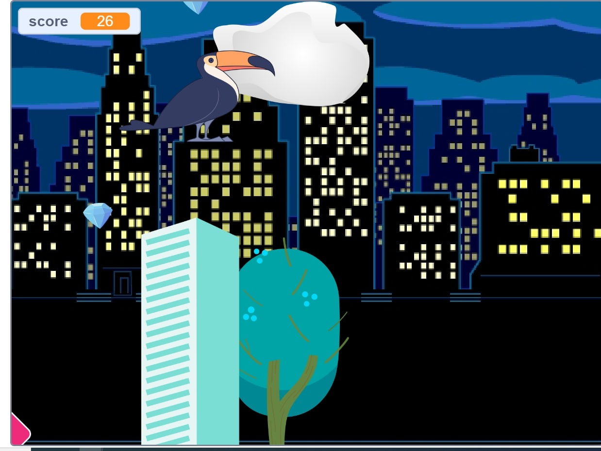
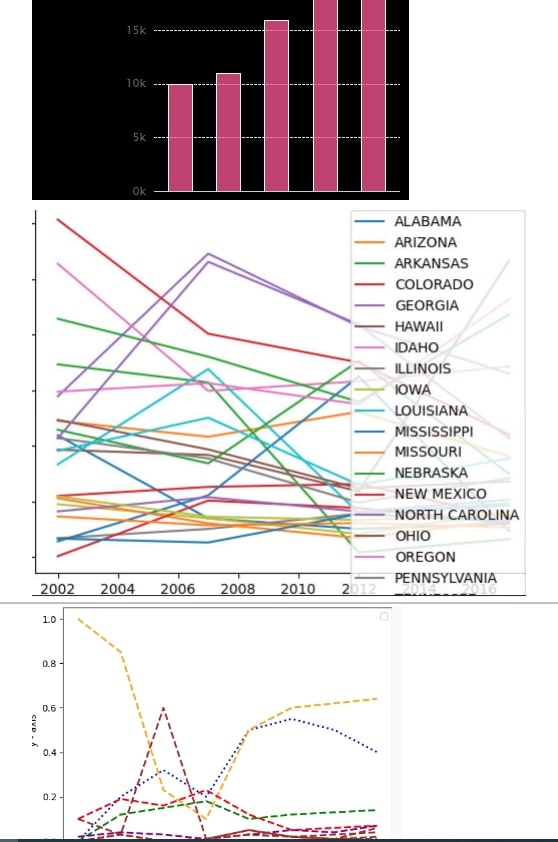
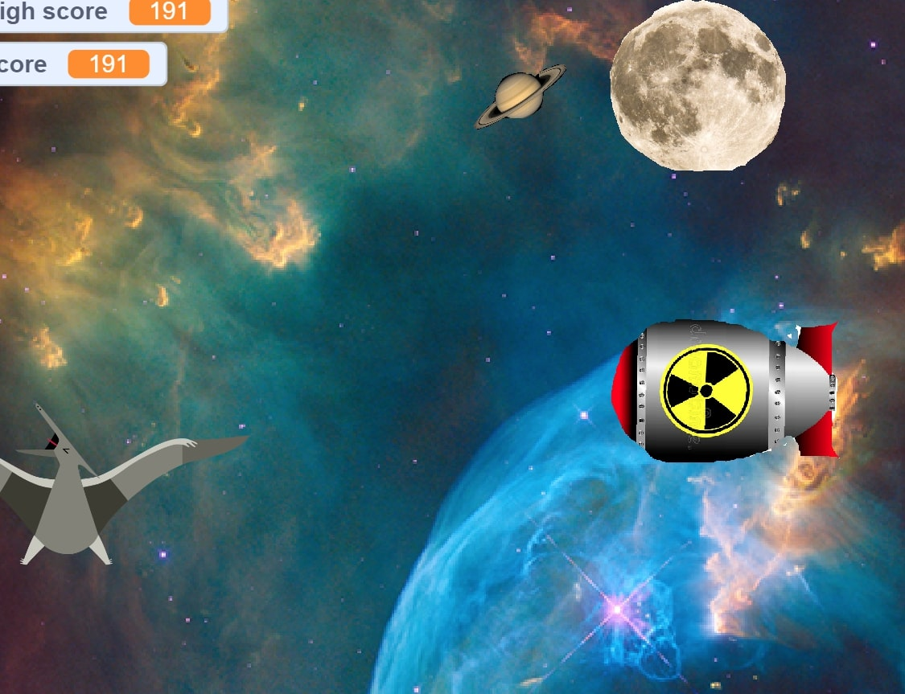
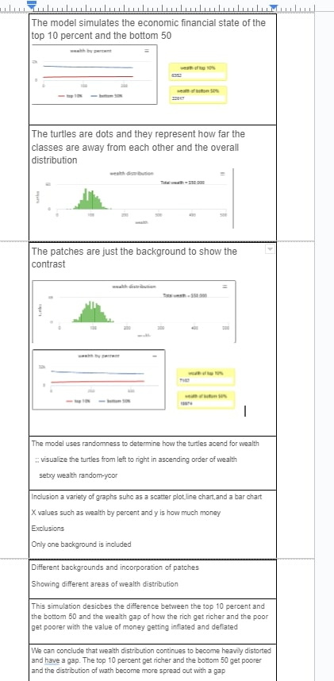
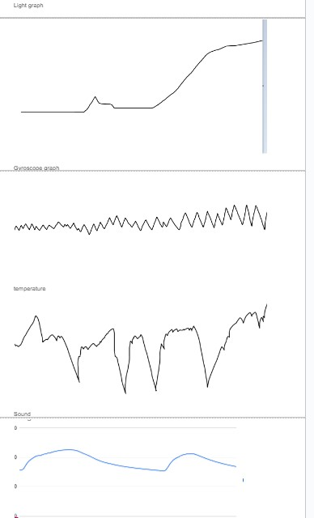

Home
Portfolio
About Me
This is my Portfolio Page!
.
1) 1.1.9 hangman project

 

(HANGMAN)we made a hangman game- we had a loading screen followed up with a word bank
where you had to guesse the right letter before the game ends
___________________________________________________(GOLF GAME)the golf game provided a ball moving side to side if you click the spacebar acertian number of times the ball will go into the hole
_____________________________________________________________________________________________________________________________________________________________________________________
__________________________________________________(RUNNING TOUCAN) the toucan is a running game where you collect as much dimands as you can.
______________________________________________________________________________________________________________________________________________________________________________________
___________________________________________________(graph) we graphed the distrubtion of honey across the united states creating line and bar charts this project helped me gain insight on bee colonies in the usa
_______________________________________________________________________________________________________________________________________________________________________________________
____________________________________________________(simulation) we simulated the economic wealth disrubition of the top 10 percent and the bottom 50 percent
________________________________________________________________________________________________________________________________________________________________________________________
____________________________________________________(final) this is a scratch jumping game dodging traps like brear traps,rockets and mouse traps
________________________________________________________________________________________________________________________________________________________________________________________
____________________________________________________(rover data) we seperate rover data values ansd graohed them